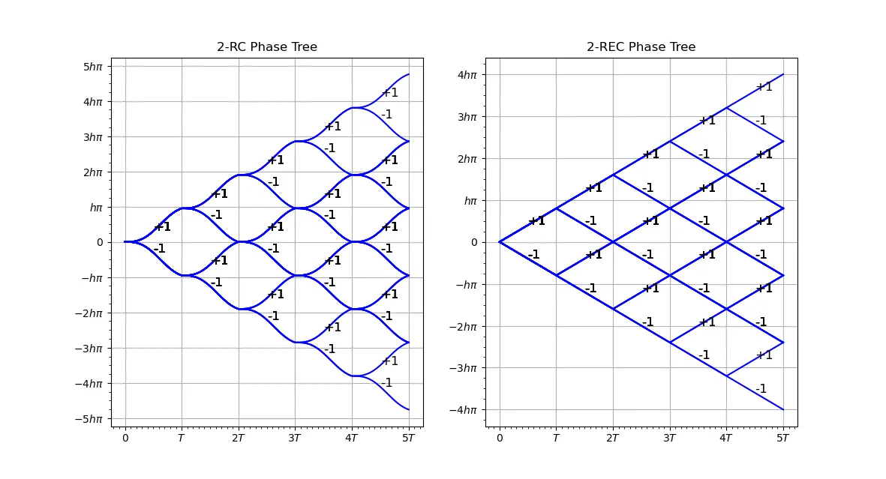
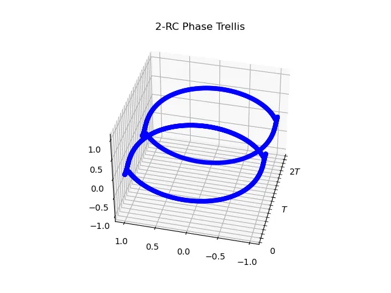

之前的部分像 PAM、PSK 和 QAM 这些调制方式的一个重要特性也就是无记忆的，这些调制方式的输出仅取决于当前的输入。这些方式明显的优点也就是实现的简便，然而例如 PSK 这些方式，存在着相位跳变的问题，这会带来更高的带宽占用。
# 差分编码和 DPSK
一个常用的、也是最直观的使用的编码方式就是 NRZ 不归零码，如果输入的 bit 为 1 就输出 1，输入为 0 就输出 - 1（或者类似的），这样的输出信号可以直接用来乘以载波实现 2-PAM 或者 BPSK 调制。
而一个” 改进 “的方式也就是所谓的差分编码。差分编码的输出取决于当前的输入和先前的输出结果，如果当前输入和之前的输出一致，那么输出就是 0，否则就是 1。记当前输入为ak，之前的输出为bk−1，那么差分编码的输出bk 就是：
bk=ak⊕bk−1
我们来考虑一个 PSK 传输的情景，在理想的情况下，发射端载波频率为fTX=fc，接收端和发射端保持完全的载波同步即fRX=fc，那么接收端收到信号是cos(2πfct+θ)，采用相干解调，得到：
cos(2πfct+θ)cos(2πfct)==cos(2πfct)2cos(θ)−sin(2πfct)cos(2πfct)sin(θ)21cos(4πfct)cos(θ)+21cos(θ)−21sin(4πfct)sin(θ)
两个高频部分可以通过低通滤波器去除，得到剩下的也就是相位部分。这样接收端得到的相位θ^=θ。
然而，实际上发射端和接收端的载波频率难以保证完美的同步，存在发射端载波频率为fTX=fc，接收端载波fRX=fc′=fc，在这种情况下，相干解调的结果：
cos(2πfct+θ)cos(2πfc′t)==cos(2πfct)cos(2πfc′t)cos(θ)−sin(2πfct)cos(2πfc′t)sin(θ)cos(2πfc′t+[2π(fc−fc′)]t+θ)
接收端得到的的相位为θ^=2π(fc−fc′)t+θ，这会导致无法正确解调。
PSK 判断的是载波的相位，而相位的偏差会导致无法正确解调。如果我们使用差分编码的话，应该就可以避免这个问题 —— 差分编码使用相位变化而不是绝对相位来表示信息 —— 这个也就是所谓的差分 PSK（DPSK）。
考虑二进制传输的情况，我们可以直接使用经过了时延的输入信号作为本地载波参与解调：
经过差分编码的 BPSK 信号，共有两种情况，也就是±Accos(2πfct)。在流图中，输入信号会经过一个T0 的时延，而T0 应该是载波周期的整倍数，因而不会影响实际的相位（当然如果不是整倍数的话，这个常数的时间带来的相位差也可以被处理掉）。这样，我们可以得到：
z(t)=⎩⎨⎧Ac2cos2(2πfct)−Ac2cos2(2πfct)=21Ac2+21cos(4πfct)=−21Ac2−21cos(4πfct)LPFLPF21Ac2,−21Ac2,y(t)=y(t−T0)y(t)=−y(t−T0)
通过结果的符号也就可以判断当前的输入和上一个输入是否相同，进而可以实现差分编码的解码。这个过程不需要本地振荡器，能够避免振荡不准带来的问题，也降低了接收端实际实现的成本。当然，这么做的代价是增加了一定的理论错误率，但是在实践中，这个方法的效果还是往往更好的。
# 从 FSK 的缺陷到 CPFSK 和 CPM
在 FSK 中，我们通过不同的频率来表示传输的数据，然而，不同频率之间的切换难免会带来一些问题。
如果我们要实现一个 M-FSK，我们至少需要 M-1 个振荡器，并且通过某种电路根据输入信号在它们之间来回切换。如果我们需要足够理想的 FSK 的话，这个切换是该是非常迅速的 —— 然而这个迅速的切换会带来额外的高频信号。这些高频信号会导致额外的能量泄漏到不需要的部分，也会对其他的频谱产生不好的影响。
我们考虑一个情境，我们实现了一个很理想的 2-FSK，我们使用两个振荡器，频率分别是fHz 和2fHz，如果传输信号是 {1,-1,-1,1}，那么最后的信号就是：
可以看到在时域上存在明显的断点，这些信号的跳变会带来非常宽的频谱。
比较一般地，我们考虑一个理想的 FSK 信号sm(t) 和其等效低通信号sm1(t)：
sm(t)=Re[T2Eej2π(mΔf)tej2πfct]sm1(t)=T2Eej2π(mΔf)t
如果记输入的消息为一个 PAM 符号序列In，重新表示等效低通的信号为：
s1(t)=T2Eej2π(InΔf)t
计算相位的变化：
d(t)=I0[u−1(t)−u−1(t−T)]+1{I0=I1}⋅I1⋅1⋅δ(t−T)=I1[u−1(t−T)−u−1(t−2T)]+1{I1=I2}⋅I2⋅2⋅δ(t−2T)=I2[u−1(t−2T)−u−1(t−3T)]+1{I2=I3}⋅I3⋅3⋅δ(t−3T)+...
其中1{cond}value 表示value 仅在cond 成立的条件下存在。这也就是说，输入的In 发生改变时，会在相位的变化d(t) 中引入一个冲激函数δ(⋅)。这个冲激函数的存在会使得积分的结果不连续，也就是相位会发生突变。这个突变会带来高频信号的产生。
利用相位的变化，我们可以重新表示等效低通信号：
s1(t)=T2Eej4πTfd∫−∞td(τ)dτ+ϕ0
这里的fd 是峰值频率的偏移，ϕ0 是载波的初始相位。
考虑到上面d(t) 中δ(⋅) 部分会引入冲激函数导致相位不连续，简单粗暴的，我们可以去掉其中冲激函数的部分：
d(t)=n=−∞∑∞Ing(t−nT)
这里的g(t) 是 phase shaping function，注意和前面调制部分的脉冲整形函数区分，一种采用方波的形式的是
g(t)=2T1[u−1(t)−u−1(t−T)]
如果我们使用一个关于时间的函数表示相位：
ϕ(t;I)=4πTfd∫−∞td(τ)dτ=4πTfd∫−∞t[n=−∞∑∞Ing(τ−nT)]dτ=4πTfd[n=−∞∑n−1Ik(T×2T1)+In⋅2Tt−nT], t∈[nT,(n+1)T)=memory2πfdTn=−∞∑n−1Ik+2πfd(t−nT)In, t∈[nT,(n+1)T)
利用ϕ(t;I)，等效低通信号可以表示为：
s1(t)=T2Eejϕ(t;I)+ϕ0
注意上面ϕ(t;I) 中的 memory 部分，这个部分累积了先前的所有输入信息，这也使得这是一个有记忆调制方式。
如果我们继续化简和取代ϕ(t;I) 的表达式，我们得到：
ϕ(t;I)=θn+2πh⋅Inq(t−nT)
这里的h=2fdT，叫做调制指数；θn=πh∑k=−∞n−1Ik，是先前所有的输入信息的累积，也就是这里调制的记忆部分；q(t) 是对g(t) 剩余部分的积分，对于t∈[nT,(n+1)T)，前面的n−1 个码字都被累积在了θn 中，而当前的第n 码字还未结束，故需要特殊处理：
q(t)=⎩⎨⎧0,2Tt,21,t<00≤t<Tt≥T
这样，我们就得到了一个连续相位频移键控（CPFSK）的表示。考虑到相位应该是d(t) 的积分，对于不包含冲激函数的d(t)，其积分应该是连续的，从而可以避免相位跳变的发生。
考虑更加一般的情况，也就是相续相位调制（CPM），载波相位：
ϕ(t;I)=2πk=−∞∑nIkhkq(t−kT), nT≤t≤(n+1)T
这里{Ik} 是一个 M 元 PAM 符号序列，{hk} 是一个调制指数序列，q(t) 是一个归一化的波形，一般是某一个脉冲g(t) 的积分：
q(t)=∫0tg(τ)dτ
以下图为例，这里的g(t) 持续可能不仅仅是一个周期T，也可能是L 个周期T，对于只持续一个周期T 也就是∀t>T,g(t)=0 的情况，我们称此时的调制信号为全响应 CPM（Full Response CPM），否则为部分响应 CPM（Partial Response CPM）。部分响应 CPM 增加了一个信息的持续时间，可以增加抗干扰能力，但是也增加了系统的复杂度。
这里的g(t) 不仅仅可以采用方波，常见的形式包括了方波 L-REC（Rectangle）：
g(t)=⎩⎨⎧2LT1,0,0≤t≤LTotherwise
升余弦脉冲 L-RC（Raised Cosine）：
g(t)=⎩⎨⎧2LT1(1−cos(LT2πt)),0,0≤t≤LTotherwise
以及 Gaussian 最小频移键控（GMSK）脉冲：
g(t)=ln2Q[2πB(t−2T)]−Q[2πB(t+2T)]
这里的Q 函数是 Gaussian 分布的累积分布函数，B 是 Gaussian 脉冲的 - 3dB 带宽。下面是一部分g(t) 的图像：
带宽 - 时间乘积BT=0.3 的 GMSK 脉冲被用于 GSM 通信中。
# 相位树和相位图
如果把所有可能的信息序列生成的相位轨迹绘制在一张图中，也就可以得到相位树。一个 1-REC 和 1-RC 的相位树如下图所示：

这个相对来说比较清晰，然而对于多元的情况，相位树会变得较为复杂，以一个使用了 1-REC 的 4 元 CPM 为例：
相位树会变得十分复杂。
一个更加方便的显示方式是相位图（Phase Trellis），考虑到相位周期为2π，实际只要显示(−π,π) 之间的部分就可以，以前面的 1-RC 的二元 CPM 为例：
如果使用cosϕ(t;I) 和sinϕ(t;I) 来表示相位，关于时间轴我们可以绘制一个相位圆柱的图像：

# 最小频移键控 MSK
最小频移键控是 CPFSK 的一个特例，如果我们设置hk=21，g(t)=2T1，输入的符号序列为二元 PAM 序列{−1,1}，我们就得到了最小频移键控（Minimum Shift Keying，MSK），我们观察相位：
ϕ(t;I)=2πk=−∞∑n−1Ik+πInq(t−nT)=θn+21πIn(Tt−nT)=2π(4TIn)t−2nπIn+θn
带入到射频形式的表示中：
sMSK(t)=Acos[2πfct+ϕ(t;I)]=Acos[2π(fc+4TIn)t−2nπIn+θn]
前面一节学的 FSK 的表示是：
sm(t)=T2Ecos[2πfct+2π(mΔf)t]
比较之后能够注意到，对于In=±1，Δf=4T1−(frac−14T)=2T1，满足正交条件，这是非常好的性质。这也就是为什么这个叫做最小频移键控。
# 偏移 QPSK OQPSK
前面一节也学了 QPSK，实际上 QPSK 也存在着相位跳变的问题 —— 观察 QPSK 的星座图，很明显如果两个 bit 数据同时改变，相位会跳变π，这明显会造成较大的旁瓣。
一个较为巧妙的方法就是偏移 QPSK（Offset Quadrature Phase Shift Keying，OQPSK）。
对于原先的 QPSK：
sQPSK(t)=n=−∞∑∞I2ng(t−2nT)cos(2πfct)−n=−∞∑∞I2n+1g(t−2nT)sin(2πfct)
在 I 或 Q 轴上引入T 的时延，使得：
sQPSK(t)=n=−∞∑∞I2ng(t−2nT)cos(2πfct)−n=−∞∑∞I2n+1g(t−(2n+1)T)sin(2πfct)
这样，两个数据 bit 不会同时发生跳变，这样相位只会出现 90 度而不是 180 度的跳变，因此可以减少旁瓣。
# MSK 其实是 OQPSK 的特例
实际上，MSK 是 OQPSK 的特例。
不失一般性地，我们假设θ0=2π∑k=−∞−1Ik=0，将ϕ(t;I) 带入 MSK 的等效低通信号：
sMSK,1(t)=ejϕ(t;I)=ejπ(2TIn)te−j2nπInej2π∑k=0n−1Ik=[cos(π2Tt)+jInsin(π2Tt)](−Inj)nk=0∏n−1(Ikj)=Inn(−1)n(j2n)k=0∏n−1(Ik)cos(π2Tt)−Inn+1(−1)n+1(j2n+1)k=0∏n−1(Ik)sin(π2Tt)=JnInnk=0∏n−1(Ik)sin(π2Tt−T)−jKnInn+1k=0∏n−1(Ik)sin(π2Tt)
我们回头看 OQPSK 的形式：
sQPSK(t)=n=−∞∑∞I2ng(t−2nT)cos(2πfct)−n=−∞∑∞I2n+1g(t−(2n+1)T)sin(2πfct)
转为等效低通信号：
sQPSK,1=n=−∞∑∞I2ng(t−2nT)−jn=−∞∑∞I2n+1g(t−(2n+1)T)
如果我们带入特殊的脉冲整形函数
g(t)=⎩⎨⎧sin(2Tπt)0,0≤t≤2T,otherwise
那么我们得到
sQPSK,1=n=−∞∑∞I2ng(t−2nT)−jn=−∞∑∞I2n+1g(t−(2n+1)T)=n=−∞∑∞I2nsin(2Tπt−2πnT)−jn=−∞∑∞I2n+1sin(2Tπt−(2n+1)πT)=n=−∞∑∞I2nsin(2Tπt−nπ)−jn=−∞∑∞I2n+1sin(2Tπ(t−T)−nπ)=n=−∞∑∞I2n(−1)nsin(2Tπt)−jn=−∞∑∞I2n+1(−1)nsin(2Tπ(t−T))=n=−∞∑∞Jn′I2n(−1)nsin(2Tπt)−jn=−∞∑∞Kn′I2n+1(−1)n+1sin(2Tπ(t+T))t∈[2nT,2(n+1)T]
可以看到 MSK 和 OQPSK 有着类似的形式，下面我们只要说明Jn 是Jn′ 的一个特例、Kn 是Kn′ 的一个特例（或者交换顺序），就足以说明 MSK 是 OQPSK 的特例。
观察Jn：
Jn=Innk=0∏n−1(Ik)
带入一组取值，有
J2mJ2m+1J2m+2J2m+3J2m+4...=I2m2mk=0∏2m−1(Ik)=k=0∏2m−1(Ik)=I2m+12m+1k=0∏2m(Ik)=I2m+1k=0∏2m(Ik)=I2m+1I2mk=0∏2m−1(Ik)=I2m+22m+2k=0∏2m+1(Ik)=I2m+1I2mk=0∏2m−1(Ik)=I2m+32m+3k=0∏2m+2(Ik)=I2m+3k=0∏2m+2(Ik)=I2m+3I2m+2I2m+1I2mk=0∏2m−1(Ik)=I2m+42m+4k=0∏2m+3(Ik)=I2m+3I2m+2I2m+1I2mk=0∏2m−1(Ik)
因为Ik 是双极性 PAM 信号，其偶数次方等于 1，因此能够消去。对于Kn，可以采用同样的方式进行处理。
从上面的式子可以看出，每一个取值都持续两个周期，这符合OQPSK 的特点。因为Ik 为双极性 PAM 序列，这里的连乘形式实际上等于差分编码，因此可以说明Jn 是Jn′ 的一个特例，Kn 是Kn′ 的一个特例。
这样，我们可以证明 MSK 是 OQPSK 的特例。
# CPM 与 ASK 信号
Laurent 证明了在 CPM 中，如果g(t) 是持续有限时间LT 的信号，那么二进制 CPM 可以使用有限数量的 AM 脉冲信号的线性组合来表示。这能够为 CPM 的收发提供一个更加低廉的实现方式。
# 一个重要的转换公式
在证明 2-CPM 能够用 ASK 信号表示之前，我们首先给一个转换公式：
ejAI=sinBsin(B−A)+ejBIsinBsinA
这里的I 为双极性 PAM 信号，A 和B 为两个不同的实常数。
这个公式允许我们改变指数上的参数，下面给出证明：
======sinB⋅ejAIsinB⋅[cosA+jIsinA]sinBcosA+jIsinBsinAsin(B−A)+cosBsinA+jIsinBsinAsin(B−A)+cosBsinA+jsin(BI)sinAsin(B−A)+sinA[cosB+jsin(BI)]sin(B−A)+sinA⋅ejBI
# 费劲的证明
我们下面来开始证明。
首先对 2-CPM 的等效低通信号进行分析：
sbCPM,1(t)=ejϕ(t;I)=ej(πh∑k=−∞n−LIk+2πh∑k=n−L+1nIkq(t−kT))=ejπh∑k=−∞n−LIk⋅k′=0∏L−1ej2πhIn−k′q(t−(n−k′)T), (n−k′=k)
令B=πh，利用上一节的转换公式，有：
=ejπh∑k=−∞n−LIk⋅k′=0∏L−1ej2πhIn−k′q(t−(n−k′)T), (n−k′=k)ejπh∑k=−∞n−LIk⋅k′=0∏L−1[sinBsin(B−2πhq(t−(n−k′)T))+ejBIn−k′sinBsin(2πhq(t−(n−k′)T))]
定义
s0(t)=⎩⎨⎧sinBsin(2πhq(t)),sinBsin(B−2πhq(t−LT)),0,0≤t<LT,LT≤t<2LT,otherwise
这里有一个很有意思的地方，注意s0(t) 的两端是存在一定的对称性的，可以带入验证一下。
将s0(t) 带入上面推到一半的等效低通形式的2−CPM 表示：
=ejπh∑k=−∞n−LIk⋅k′=0∏L−1[sinBsin(B−2πhq(t−(n−k′)T))+ejBIn−k′sinBsin(2πhq(t−(n−k′)T))]ejπh∑k=−∞n−LIkk′=0∏L−1[the second halfs0(t−(n−k′)T+LT)+ejBIn−k′the first halfs0(t−(n−k′)T)]
这里的0≤t−(n−k′)T<LT,LT≤t−(n−k′)+LT≤2LT，上面标注的部分分别对应了s0(t) 的两个部分。
接下来需要处理这个累乘的部分，根据二项式定理，累乘部分展开共有2L 项。
我们观察上面的等式，注意到s0(t−(n−k′)T) 和s0(t−(n−k′)T+LT) 中相差一个LT，我们采用下面的标识来记录这个差值：
ai,k′=1→s0(t−(n−k′)T+LT)=s0(t−(n−k′)T+ai,k′LT)ai,k′=0→s0(t−(n−k′)T)=s0(t−(n−k′)T+ai,k′LT)
通过一个序列ai,k′,k′=0,1,...,L−1，我们就能够唯一标识累乘展开中的一项。
将上面的累乘展开，得到：
=××...×=k′=0∏L−1[s0(t−(n−k′)T+LT)+ejBIn−k′s0(t−(n−k′)T)](ai,0=1s0(T−nT+0⋅t+LT)+ejBIn−0ai,0=0s0(t−nT+0⋅T))(ai,1=1s0(T−nT+1⋅t+LT)+ejBIn−1ai,1=0s0(t−nT+1⋅T))(ai,2=1s0(T−nT+2⋅t+LT)+ejBIn−2ai,2=0s0(t−nT+2⋅T))(ai,L−1=1s0(T−nT+(L−1)⋅t+LT)+ejBIn−(L−1)ai,L−1=0s0(t−nT+(L−1)⋅T))i=0∑2L−1ejB∑k′=0L−1(1−ai,k′)In−k′k′=0∏L−1s0(t−nT+k′T+ai,k′LT)
将展开结果带入到前面低通信号的表示公式中：
====sbCPM,1(t)ejπh∑k=−∞n−LIki=0∑2L−1ejB∑k′=0L−1(1−ai,k′)In−k′k′=0∏L−1s0(t−nT+k′T+ai,k′LT)i=0∑2L−1ejπh(k=−∞∑n−LIk+k′=0∑L−1In−k′−k′=0∑L−1ai,k′In−k′)k′=0∏L−1s0(t−nT+k′T+ai,k′LT)i=0∑2L−1exp(jπh(Ai,nComplex Amplitudek=−∞∑nIk−k′=0∑L−1ai,k′In−k′))ci(t)Pulse Shaping Functionk′=0∏L−1s0(t−nT+k′T+ai,k′LT)i=0∑2L−1ejπhAi,nci(t−nT)
其中
⎩⎨⎧Ai,n=∑k=−∞nIk−∑k′=0L−1ai,k′In−k′ci(t)=∏k′=0L−1s0(t−nT+k′T+ai,k′LT)
可以看到上面的低通信号被转换为了一个类似 ASK 的形式，不过其中的载波幅度Ai,n 为一个复数而非实数，这相当于一个广义的 ASK。这样子，要实现一个 LT 的 2-CPM，我们可以用2L 条 ASK 线路来实现。这是一个比较有用的方法，因为调幅的成本要比其他调制方式低很多。不过缺憾还是挺明显的，按照现在的证明，我们需要2L 条线路，这在L 比较大的情况下是不可行的。
更加深入的证明指出，实际我们只需要2L−1 条线路就可以实现这个 2-CPM，这个证明比较复杂，这里就不展开了。